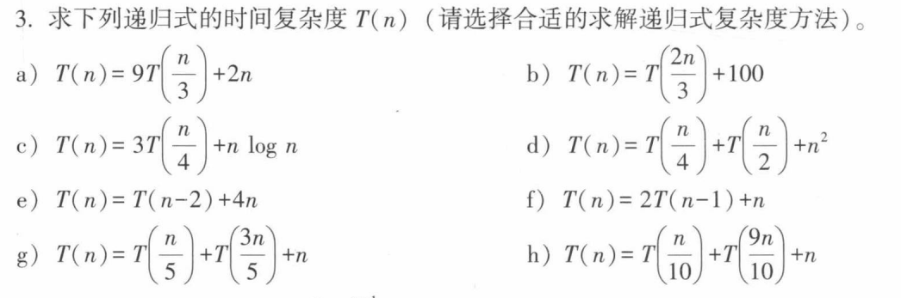
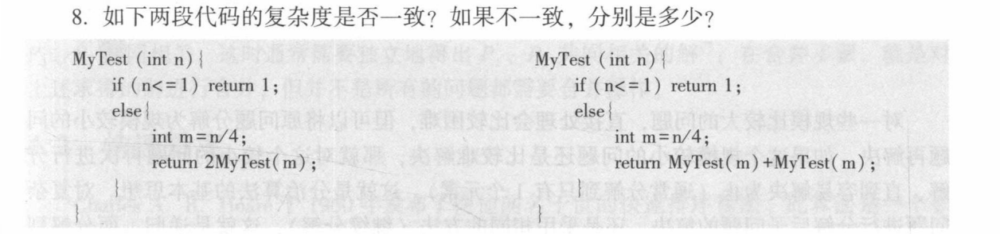
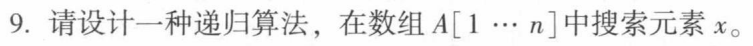
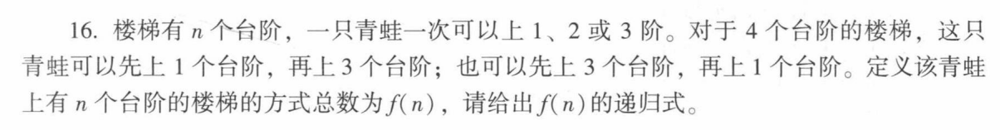

排序与递归¶
排序¶
比较排序¶
- 两两元素之间间确定顺序必须对彼此进行一个比较，可以参照一个二叉树的左右子节点
- 通过决策树（Decision Tree）模型可以证明，任何基于比较的排序算法在最坏情况下的比较次数下界为 \(\Omega(n \log n)\) ，因而这类比较排序算法的平均最优复杂度往往是 \(O(n \log n)\)
-
冒泡排序：
- 通过依次对两两相邻的元素进行比较与交换，第 \(i\) 次循环将未排序部分的最大元素“冒泡”移至倒数第 \(i\) 个位置，理解下来就是给大的元素都往右边放
- 最坏/平均时间复杂度为 \(\Theta(n^2)\)；若加入提前终止标记（也就是当一轮遍历中无交换时停止），最好情况（原序列有序）时间复杂度为 \(O(n)\)
- 算法稳定，原有等值序列顺序不变
def bubble_sort(arr): n = len(arr) for i in range(n - 1): swapped = False for j in range(0, n - 1 - i): if arr[j] > arr[j + 1]: arr[j], arr[j + 1] = arr[j + 1], arr[j] # 交换 swapped = True if not swapped: # 若无交换，说明已经有序，提前终止 break return arr -
选择排序：
- 第 \(i\) 趟循环从剩余未排序元素中选出最小者，与第 \(i\) 个位置的元素交换，给最小的元素都排序到最左边
-
不论原数组初始顺序如何，比较次数固定为 \(\frac{n(n-1)}{2}\)，时间复杂度恒为 \(\Theta(n^2)\)；空间复杂度为 \(\Theta(1)\)
-
不稳定，因为可能等值元素还是会交换，打乱排序
def selection_sort(arr):
n = len(arr)
for i in range(n - 1):
min_idx = i
for j in range(i + 1, n):
if arr[j] < arr[min_idx]:
min_idx = j
arr[i], arr[min_idx] = arr[min_idx], arr[i] # 将最小值换到当前首位
return arr
冒泡排序通过多次交换找最大值，期望交换次数为 \(\frac{n}{2}\)（每次交换需 3 次赋值）；而选择排序只记录最小元素下标，每轮只做 1 次交换
- 插入排序：
- 将未排序区的第一个元素，从后往前与已排序区元素依次比较，插入到合适的排序位置，插入的元素必定是有序的
- 最好情况（正序）时间复杂度为 \(O(n)\)；最坏情况（逆序）比较次数为 \(\frac{n(n-1)}{2}\)，时间复杂度为 \(\Theta(n^2)\)；假设插入各位置概率均匀（服从 \(\frac{1}{i}\) 均匀分布），平均时间复杂度亦为 \(\Theta(n^2)\)
- 算法稳定，因为是从后往前，那么原本在前的等值元素一定不会放在后面
def insertion_sort(arr):
n = len(arr)
for i in range(1, n):
key = arr[i]
j = i - 1
# 将大于 key 的元素统一向后移动一位
while j >= 0 and arr[j] > key:
arr[j + 1] = arr[j]
j -= 1
arr[j + 1] = key
return arr
- 希尔排序：
- 插入排序的改进版（缩小增量排序）。初始化步长 \(h\)，将数组分割成不同的子数组分别进行插入排序，随后逐步缩短步长至 1，意思是扫描的步长相对于插入排序会逐步增加
- 原始希尔步长（\(h_i = 2h_{i-1}\)）：最坏时间复杂度为 \(\Theta(n^2)\)2。
- Hibbard 步长（\(h_i = 2h_{i-1}+1\)）：最坏时间复杂度改进为 \(\Theta(n^{3/2})\)。
- Sedgewick 步长：最坏复杂度可达 \(\Theta(n^{4/3})\)
- 算法不稳定，因为它本质分组，组内稳定，但是不同组之间的顺序没有做约束，可能归并组后就产生了顺序偏移
- 插入排序的改进版（缩小增量排序）。初始化步长 \(h\)，将数组分割成不同的子数组分别进行插入排序，随后逐步缩短步长至 1，意思是扫描的步长相对于插入排序会逐步增加
缩小增量排序，按照步长 gap 分组进行插入排序，逐步缩小步长至 1。
def shell_sort(arr):
n = len(arr)
gap = n // 2 # 初始步长（希尔增量）
while gap > 0:
for i in range(gap, n):
temp = arr[i]
j = i
# 组内进行插入排序
while j >= gap and arr[j - gap] > temp:
arr[j] = arr[j - gap]
j -= gap
arr[j] = temp
gap //= 2 # 缩小步长
return arr
- 堆排序：
- 先调用
makeheap将无序数组构建为最大堆（自底向上建堆耗时 \(O(n)\)）；随后执行 \(n-1\) 次循环，每次将堆顶最大元素与末尾元素交换（将最大值沉底），并对新堆顶调用Sift-down重新调整 - 时间复杂度在最好、最坏与平均情况下均稳健为 \(O(n \log n)\)；原地工作，空间复杂度为 \(\Theta(1)\)
- 不稳定（堆顶与末尾元素交换会破坏相同键值元素的相对位置）
- 先调用
自底向上建最大堆，然后反复将堆顶最大值与末尾元素交换，并执行 sift_down 调整。
def heap_sort(arr):
n = len(arr)
def sift_down(arr, n, i):
largest = i
left, right = 2 * i + 1, 2 * i + 2
if left < n and arr[left] > arr[largest]:
largest = left
if right < n and arr[right] > arr[largest]:
largest = right
if largest != i:
arr[i], arr[largest] = arr[largest], arr[i]
sift_down(arr, n, largest)
# 1. 自底向上建立最大堆 (从最后一个非叶子节点开始)
for i in range(n // 2 - 1, -1, -1):
sift_down(arr, n, i)
# 2. 逐个将堆顶元素与末尾交换，并缩小堆的有效规模
for i in range(n - 1, 0, -1):
arr[0], arr[i] = arr[i], arr[0] # 最大值沉底
sift_down(arr, i, 0) # 重新调整堆顶
return arr
-
归并排序：
-
二路归并先将数组递归一分为二，对子数组排序后再进行 Merge（利用双指针合并两个有序数组）；亦可以采用自底向上的迭代方式实现
-
bash 原始数组: [ 4, 2, 7, 1, 3, 6, 5, 8 ] / \ 分解: [ 4, 2, 7, 1 ] [ 3, 6, 5, 8 ] / \ / \ [4, 2] [7, 1] [3, 6] [5, 8] / \ / \ / \ / \ [4] [2] [7] [1] [3] [6] [5] [8] ---------------------------------------------------- (子序列长为 1，开始自底向上合并) 合并: [2, 4] [1, 7] [3, 6] [5, 8] \ / \ / [ 1, 2, 4, 7 ] [ 3, 5, 6, 8 ] \ / 最终有序: [ 1, 2, 3, 4, 5, 6, 7, 8 ] -
时间复杂度恒为 \(O(n \log n)\)；由于 Merge 操作需要开辟辅助空间，空间复杂度为 \(\Theta(n)\)
-
稳定
-
自顶向下分治，二分递归后使用双指针将两个有序子数组合并。
def merge_sort(arr):
if len(arr) >= 1:
return arr
mid = len(arr) // 2
left = merge_sort(arr[:mid]) # 递归左半部分
right = merge_sort(arr[mid:]) # 递归右半部分
return merge(left, right)
def merge(left, right):
result = []
i = j = 0
# 双指针合并两个有序数组
while i < len(left) and j < len(right):
if left[i] <= right[j]: # 确保稳定性
result.append(left[i])
i += 1
else:
result.append(right[j])
j += 1
result.extend(left[i:])
result.extend(right[j:])
return result
-
快速排序
-
选轴（Pick a Pivot）：从待排区间中挑出一个元素作为基准值（Pivot）。
分区（Partition）：通过元素重排，将序列分为两部分：
- 所有小于等于基准值的元素移到基准左侧；
- 所有大于等于基准值的元素移到基准右侧；
- 分区结束后，基准值落到它的最终绝对位置，不再参与后续交换。
递归（Recursion）：分别对基准左侧和右侧的子区间递归执行上述过程，直至区间长度为 0 或 1。
-
平均与最好时间复杂度为 \(O(n \log n)\)；最坏情况（划分极度不均匀，如已有序且选端点为基准）退化为 \(O(n^2)\)
-
选择基准（Pivot）对数组进行 Partition 划分为两部分，再递归处理左右区间。
def quick_sort(arr, low=0, high=None):
if high is None:
high = len(arr) - 1
if low < high:
p_idx = partition(arr, low, high)
quick_sort(arr, low, p_idx - 1) # 递归处理左区间
quick_sort(arr, p_idx + 1, high) # 递归处理右区间
return arr
def partition(arr, low, high):
pivot = arr[high] # 选取末尾元素作为基准
i = low - 1
for j in range(low, high):
if arr[j] <= pivot:
i += 1
arr[i], arr[j] = arr[j], arr[i]
arr[i + 1], arr[high] = arr[high], arr[i + 1]
return i + 1 # 返回基准最终放置的正确下标
线性排序¶
- 桶排序
- 创建 \(m\) 个有序桶，根据数值区间将 \(n\) 个元素按映射公式分发到桶中；桶内调用比较排序；最后按桶顺序合并
- 若元素均匀分布且 \(m \approx n\)，期望时间复杂度为 \(O(n)\)；若分布极不均匀退化为比较排序。辅助空间复杂度为 \(O(n+m)\)
将数值映射划分至不同的有序桶内，桶内分别排序后再按顺序拼接。
def bucket_sort(arr, bucket_size=5):
if not arr:
return arr
min_val, max_val = min(arr), max(arr)
bucket_count = (max_val - min_val) // bucket_size + 1
buckets = [[] for _ in range(bucket_count)]
# 1. 根据数值区间投递入对应的桶中
for num in arr:
idx = (num - min_val) // bucket_size
buckets[idx].append(num)
# 2. 桶内排序，并进行结果拼接
result = []
for bucket in buckets:
result.extend(sorted(bucket)) # 桶内亦可使用插入排序
return result
- 计数排序
- 通过统计小于等于元素 \(x\) 的元素个数 \(m\)，直接确定 \(x\) 在输出数组中的位置 \(m+1\)。算法设置辅助数组 \(B\)（存放结果）与 \(C\)（计数桶）
- 时间复杂度为 \(\Theta(n+k)\)（\(k\) 为最大元素值），空间复杂度为 \(\Theta(n+k)\)。仅当 \(k = O(n)\) 时，时间复杂度达到 \(\Theta(n)\)
统计各元素出现频次，求前缀和确定每个元素输出位置。倒序填充可维持算法稳定性。
def counting_sort(arr):
if not arr:
return arr
min_val, max_val = min(arr), max(arr)
k = max_val - min_val + 1
count = [0] * k
output = [0] * len(arr)
# 1. 频次统计
for num in arr:
count[num - min_val] += 1
# 2. 累加前缀和，计算最终排名
for i in range(1, k):
count[i] += count[i - 1]
# 3. 倒序遍历填入输出数组，维持稳定性
for num in reversed(arr):
idx = count[num - min_val] - 1
output[idx] = num
count[num - min_val] -= 1
return output
- 基数排序
- LSD（最低位优先）：从最低位到最高位依次进行稳定排序（如计数排序或桶排序）。时间复杂度为 \(O(d(n+k))\)（\(d\) 为位数，\(k\) 为基数）
- MSD（最高位优先）：从最高位开始将元素分成 10 堆，再在各堆中递归排序低一位，是一个递归过程
按低位到高位（个位、十位、百位...）依次进行稳定的计数排序。
def radix_sort(arr):
if not arr:
return arr
max_val = max(arr)
exp = 1 # 初始以个位 (10^0) 开始
# 从最低有效位到最高有效位循环
while max_val // exp > 0:
output = [0] * len(arr)
count = [0] * 10
# 按当前位 (exp) 统计频次
for num in arr:
digit = (num // exp) % 10
count[digit] += 1
# 累加前缀和
for i in range(1, 10):
count[i] += count[i - 1]
# 倒序填入结果数组保持稳定
for num in reversed(arr):
digit = (num // exp) % 10
output[count[digit] - 1] = num
count[digit] -= 1
arr = output
exp *= 10 # 进到高一位
return arr
梳理¶
| 排序算法 | 最坏时间复杂度 | 最好时间复杂度 | 平均时间复杂度 | 辅助空间复杂度 | 是否稳定 | 是否原地排序 (In-place) |
|---|---|---|---|---|---|---|
| 冒泡排序 | \(O(n^2)\) | \(O(n)\) | \(O(n^2)\) | \(O(1)\) | 稳定 | 是 |
| 选择排序 | \(\Theta(n^2)\) | \(\Theta(n^2)\) | \(\Theta(n^2)\) | \(\Theta(1)\) | 不稳定 | 是 |
| 插入排序 | \(\Theta(n^2)\) | \(O(n)\) | \(\Theta(n^2)\) | \(O(1)\) | 稳定 | 是 |
| 希尔排序 | \(\Theta(n^2)\)（原始步长） | \(O(n)\) | \(O(n^{1.3}\sim n^{1.5})\) | \(O(1)\) | 不稳定 | 是 |
| 堆排序 | \(O(n \log n)\) | \(O(n \log n)\) | \(O(n \log n)\) | \(\Theta(1)\) | 不稳定 | 是 |
| 归并排序 | \(O(n \log n)\) | \(O(n \log n)\) | \(O(n \log n)\) | \(\Theta(n)\) | 稳定 | 否 |
| 快速排序 | \(O(n^2)\) | \(O(n \log n)\) | \(O(n \log n)\) | \(O(\log n)\)（递归栈） | 不稳定 | 否（有栈空间） |
| 计数排序 | \(\Theta(n+k)\) | \(\Theta(n+k)\) | \(\Theta(n+k)\) | \(\Theta(n+k)\) | 稳定 | 否 |
| 桶排序 | \(O(n^2)\)（退化） | \(O(n)\) | \(O(n)\) | \(O(n+m)\) | 稳定 | 否 |
| 基数(LSD) | \(O(d(n+k))\) | \(O(d(n+k))\) | \(O(d(n+k))\) | \(O(n+k)\) | 稳定 | 否 |
递归¶
基本概念¶
- 用规模较小的问题（如 \(n-1\) 或 \(n/b\) 规模）来定义规模较大的问题（\(n\) 规模）
- 边界条件（递归出口）：保证递归能在有限步内终止的必要条件（如 \(n=0\) 时 \(n! = 1\)）
- 递归方程：定义大问题与小问题之间的递推关系（如 \(n! = n \times (n-1)!\)）
递归 OR 迭代 以计算阶乘 \(5! = 5 \times 4 \times 3 \times 2 \times 1\) 为例：
递归是“递去”与“归来”（自顶向下，Top-Down）：
递去：为了算 \(f(5)\)，先问 \(f(4)\)；为了算 \(f(4)\)，先问 \(f(3)\)……直到问到基线条件 \(f(1) = 1\)。
归来：触底后逐层返回值并计算，\(f(1) \to f(2) \to f(3) \to f(4) \to f(5)\)。
核心心智模型：相信子问题已解，只负责当前层与子问题的关系。
迭代是“滚雪球”（自底向上，Bottom-Up）：
从起点出发，维护一个累乘变量
result = 1。依次执行
result *= 2，result *= 3，result *= 4，result *= 5。核心心智模型：明确每一步状态如何转移，通过循环变量驱动前进。
递归复杂度¶
-
展开法
对于复杂度的 \(T(n)\), 把它往简化的 \(T(n-k)\quad T(\frac{n}{c})\) 化简，直到 \(T(1)\)
- \(T(n) = T(n/2) + cn\) $\(T(n) = T(n/4) + c(n/2) + cn = \dots = T(1) + c(2 + 4 + \dots + n/2 + n) = \Theta(n)\)$ 注意右边是等比数列求和，带入 \(n=2^k\) 会比较清晰的算好
- \(T(n) = T(n-k) + T(k) + cn\) \(n = mk\)， $\(T(n) = mT(k) + c \sum_{i=0}^{m-1} (n - ik) = \Theta(n^2)\)$
-
代入法 先猜后证，先基于经验猜测复杂度阶（如猜测为 \(O(n \log n)\)），再通过数学归纳法严格证明 \(T(n) \le cn \log n\)
- 证明 \(T(n) = T(\lfloor n/2 \rfloor) + T(\lceil n/2 \rceil) + \Theta(1)\) 猜测它阶为 \(O(n)\)
- 错解 假设对 \(m < n\) 有 \(T(m) \le cm\)，代入得： $\(T(n) \le c\lfloor n/2 \rfloor + c\lceil n/2 \rceil + c' = cn + c'\)$
- 正解 强化归纳假设，假设 \(T(m) \le cm - d\)（其中 \(d > 0\) 为常数）代入。 $\(T(n) \le (c\lfloor n/2 \rfloor - d) + (c\lceil n/2 \rceil - d) + c' = cn - 2d + c' = cn - d - (d - c')\)$ 只需选择足够大的 \(d\) 使得 \(d \ge c'\)，即可完美推出 \(T(n) \le cn - d\)
- 证明 \(T(n) = T(\lfloor n/2 \rfloor) + T(\lceil n/2 \rceil) + \Theta(1)\) 猜测它阶为 \(O(n)\)
-
递归树 把递归过程画成一棵树，树的深度对应递归层数，节点的权值对应当前层的计算开销 例如 \(T(n) = aT(n/b) + f(n)\)：
- \(T\) 函数部分（\(aT(n/b)\)）：代表“继续向下分发给子问题”的递归调用，它决定了递归树的形状（树的分叉数 \(a\) 和问题规模缩减比例 \(b\)）。
- 非 \(T\) 函数部分（\(f(n)\)）：代表“当前节点自己需要完成的本地开销”（如划分 Partition、合并 Merge、或者常数级别的比较与赋值）
-
$$ \text{复杂度}=\text{每层开销}\times\text{层数规模} $$- 分治树 \(T(n) = 2T(n/2) + cn\)，树高 \(\log_2 n\)，每层节点开销之和均为 \(cn\)，总结构为 \(cn \cdot \log_2 n \implies \Theta(n \log n)\)
- 非对称分治树
\(T(n) = T(\alpha n) + T(\beta n) + cn\)（如 \(\alpha = 1/3, \beta = 2/3\)，满足 \(\alpha + \beta = 1\)）
- 层数：最短路径高度为 \(\log_{1/\alpha} n\)，最长路径高度为 \(\log_{1/\beta} n\) ，即\(\log n\) 规模
- 每层开销不超过 \(cn\)
关于非对称分治树
-
第 0 层（根）：开销为 \(cn\)
-
第 1 层：产生两个子节点，规模分别为 \(\alpha n\) 和 \(\beta n\)。 $\(\text{第 1 层总开销} = c(\alpha n) + c(\beta n) = c(\alpha + \beta)n\)$
-
第 2 层：\(\alpha n\) 节点继续分出 \(\alpha^2 n, \alpha\beta n\)；\(\beta n\) 节点分出 \(\alpha\beta n, \beta^2 n\)。
\[\text{第 2 层总开销} = c(\alpha^2 + 2\alpha\beta + \beta^2)n = c(\alpha + \beta)^2 n\] -
第 \(i\) 层（在未触及最短枝叶子前）： $\(\text{第 } i \text{ 层总开销} = c(\alpha + \beta)^i n\)$
因而 \(\alpha+\beta\) 非常重要
- 主节点失效
求解 \(T(n) = 2T(n/2) + n \log n\)
- 第 \(0\) 层（根）：\(n \log n\)
- 第 \(1\) 层：\(2 \times \frac{n}{2} \log \frac{n}{2} = n (\log n - 1) = n \log n - n\)
- 第 \(i\) 层：\(n \log n - i \cdot n\)
- 将 \(\log_2 n\) 层求和，最终推导出 \(T(n) = \Theta(n \log^2 n)\)
- 主方法 针对 \(T(n) = aT(n/b) + f(n)\) 类型，关键在于比较叶子节点总量 \(n^{\log_b a}\) 与根节点分解开销 \(f(n)\) 的增长速度
主方法判别
- 当 \(f(n) = n^x\) 时
- Case 1（叶子主导）：若 \(a > b^x\)（即 \(n^{\log_b a} > n^x\)），则 \(T(n) = \Theta(n^{\log_b a})\)。
- Case 2（两端平衡）：若 \(a = b^x\)（即 \(n^{\log_b a} = n^x\)），则 \(T(n) = \Theta(n^x \log n)\)。
- Case 3（根节点主导）：若 \(a < b^x\)（即 \(n^{\log_b a} < n^x\)），则 \(T(n) = \Theta(n^x)\)
主方法失效
- 非多项式差距：例如 \(T(n) = 2T(n/2) + n \log n\)。此处 \(n^{\log_2 2} = n\)，虽然 \(f(n) = n \log n > n\)，但它并不比 \(n\) 达到多项式意义上的严格大（不存在 \(\epsilon > 0\) 使得 \(n \log n = \Omega(n^{1+\epsilon})\)），必须用递归树法求出 \(\Theta(n \log^2 n)\)。
- \(a\) 或 \(b\) 不是常数：例如 \(T(n) = n T(n-1)\)。
- 子问题规模不按比例缩减：例如 \(T(n) = T(n-1) + 1\) 或 \(T(n) = T(\sqrt{n}) + 1\)
可以这样理解主方法，针对 \(T(n) = aT(n/b) + f(n)\), 随着层数的增加，节点上升，但是 \(f(n)\) 由于轮次的推进，它是会减少的，本质是比较每层所作的工作的衰减，同整个系统它节点爆炸之间的平衡关系，只有二者平等的时候，也就是主节点工作量和最终的叶子规模相同，我们才能给二者相乘，否则偏向一边
习题¶

a. 最底层，此时经历了 \(k=\log_3n\) 层分叉，每层都扩大 9 倍，总共叶子有 \(9^{\log_3n}=n^{\log_39}=n^2\) ，而根节点的每次开销是 \(O(n)\)， 故而复杂度是 $\(T(n) = \Theta(n^{\log_3 9}) = \mathbf{\Theta(n^2)}\)$
b. 叶子规模 \(k=n^0=1\) ,考虑深度为 \(\log n\) 每层开销 \(O(1)\) , 复杂度 \(T(n)=\Theta(\log n)\)
c. 叶子规模 \(k=n^{\log_43}\lt n\log n\), 主节点主导，复杂度为 \(T(n)=\Theta(n\log n)\)
d. 不好用主方法， 先确定叶子规模：它的数目满足递推 $\(L(n) = L(n/4) + L(n/2)\)$ , 估计它的复杂度为 \(O(n^p)\)， 那么 $\(n^p = \left(\frac{n}{4}\right)^p + \left(\frac{n}{2}\right)^p \implies 1 = \left(\frac{1}{4}\right)^p + \left(\frac{1}{2}\right)^p\)$
得到 \(p\approx0.69\). 再确定整体复杂度 $\(T(n) \le n^2 \sum_{i=0}^{\infty} \left(\frac{5}{16}\right)^i = n^2 \times \frac{1}{1 - 5/16} = \mathbf{\frac{16}{11} n^2}\)$
最终 \(T(n)=\Theta(n^2)\)
e. 不按比例衰减，设 \(n=2k\) 那么\(T(n)=T(2k)=T(2k-2)+8k=8\sum_{i=1}^ki+T(2)=\Theta(k^2)\)
那么 \(T(n)=\Theta(n^2)\)
f. 也是不好用主方法，考虑分治树，每层开销之和 $\(S(n) = \sum_{k=0}^{n-1} 2^k (n-k)\)$ 不难得到
叶子节点个数为 \(2^n\) 个，明显最终 \(T(n)=\Theta(2^n)\)
g. 非对称的分治树，因为 \(\frac{3}{5}+\frac{1}{5}<1\), 故而主开销占主导，\(T(n)=\Theta(n)\)
f. 平衡分治树，层数为 \(O(\log n)\) 复杂度 \(T(n)=\Theta(n\log n)\)

- Left 求值翻倍不等于扩大规模
- Right

注意到 A 是有序的，考虑二分
def find(A, x, l, r):
if l > r:
return -1
mid = (l + r) // 2
if A[mid] == x:
return mid
elif A[mid] > x:
return find(A, x, l, mid - 1)
elif A[mid] < x:
return find(A, x, mid + 1, r)
res = find(A, x, 0, len(A) - 1)

可以这样理解，
-
如果我们已知上 \(n-1\) 组台阶，有 \(f(n-1)\) 种，那么后续只有唯一的一次，也就是跳1步，到 \(n\) 阶。
-
如果上 \(f(n-2)\) 那么就往后跳一个2步
- 如果上 \(f(n-3)\) 那么跳一个三步